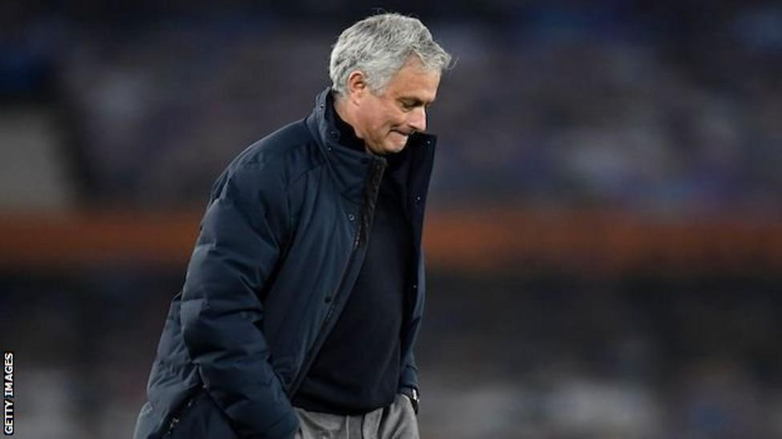

.png)

The Portuguese replaced Mauricio Pochettino as Spurs manager in November 2019 and guided the club to sixth in the Premier League last season. They are currently seventh, having picked up two points from their past three league games, and were knocked out of the Europa League in March. Spurs face Manchester City in the Carabao Cup final on 25 April. On Sunday, Tottenham were one of six Premier League clubs to announce they were joining a new European Super League, but it is not related to Mourinho's sacking. Mourinho's coaching staff of Joao Sacramento, Nuno Santos, Carlos Lalin and Giovanni Cerra have also been sacked.
tottenhamhotspurwebsite
"Jose and his coaching staff have been with us through some of our most challenging times as a club," said Tottenham chairman Daniel Levy. "Jose is a true professional who showed enormous resilience during the pandemic. "On a personal level I have enjoyed working with him and regret that things have not worked out as we both had envisaged. "He will always be welcome here and we should like to thank him and his coaching staff for their contribution."
Mourinho was not the most popular appointment, but his standing among Spurs fans soared with his performances on Amazon documentary 'All or Nothing', which charted the club's 2019-20 season. And he became somewhat of a social media star with hisInstagram posts. After re-signing Gareth Bale on loan, Spurs had enjoyed a promising start to the current season, including a 6-1 win against Mourinho's former club Manchester United at Old Trafford. A 2-0 home win over north London rivals Arsenal in early December saw them go top of the Premier League, as Mourinho - a three-time Premier League and two-time Champions League winner - became only the second Spurs manager in history to win his first two north London derbies. They weren't top for long, dropping back to second later that month with defeat by Liverpool. Since then, Spurs have won seven of 19 league games, losing eight of them. In February, they were knocked out of the FA Cup in a 5-4 quarter-final defeat by Everton, marking the first time a Mourinho side had conceded five goals since 2010. They were beaten 2-1 at Arsenal on 14 March and four days later were eliminated from the Europa League, losing 3-2 on aggregate to Dinamo Zagreb having won the first leg 2-0. Two weeks ago, Mourinho - who has earned a reputation as a master tactician and defensive-minded coach and is a former Fifa world coach of the year - refused to accept the blame for Spurs' dropped points. "Same coach, different players," he said when it was pointed out to him how good his teams usually are at defending leads.